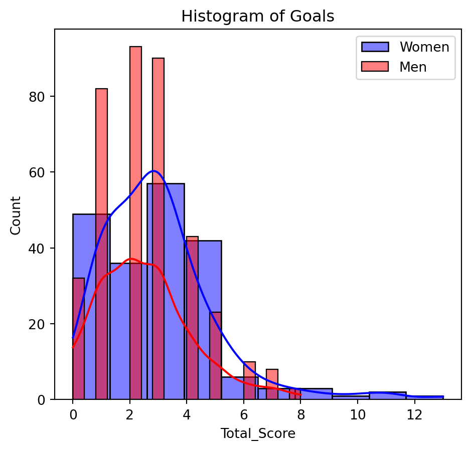

Associate Data Science Course in Python by DataCamp Inc
Published
March 4, 2024
A soccer pitch for an international match.
1 Project Overview
You’re working as a sports journalist at a major online sports media company, specializing in soccer analysis and reporting. You’ve been watching both men’s and women’s international soccer matches for a number of years, and your gut instinct tells you that more goals are scored in women’s international football matches than men’s. This would make an interesting investigative article that your subscribers are bound to love, but you’ll need to perform a valid statistical hypothesis test to be sure!
While scoping this project, you acknowledge that the sport has changed a lot over the years, and performances likely vary a lot depending on the tournament, so you decide to limit the data used in the analysis to only official FIFA World Cup matches (not including qualifiers) since 2002-01-01.
You create two datasets containing the results of every official men’s and women’s international football match since the 19th century, which you scraped from a reliable online source. This data is stored in two CSV files:
women_results.csv – Results of every official women’s international match.
men_results.csv – Results of every official men’s international match.
The question you are trying to determine the answer to is:
Are more goals scored in women’s international soccer matches than men’s?
You assume a 10% significance level, and use the following null and alternative hypotheses:
\(H_0\) : The mean number of goals scored in women’s international soccer matches is the same as men’s.
\(H_A\) : The mean number of goals scored in women’s international soccer matches is greater than men’s.
2 Datasets Summary
Table 1: men_results.csv/women_results.csv
Column
Description
date
The date when the match was played (YYYY-MM-DD format).
home_team
The name of the team that played at home.
away_team
The name of the team that played away.
home_score
The number of goals scored by the home team.
away_score
The number of goals scored by the away team.
tournament
The type of tournament in which the match was played (e.g., FIFA World Cup, Friendly).
3 Project instructions
Perform an appropriate hypothesis test to determine the p-value, and hence result, of whether to reject or fail to reject the null hypothesis that the mean number of goals scored in women’s international soccer matches is the same as men’s. Use a 10% significance level.
For this analysis, you’ll use Official FIFA World Cup matches since 2002-01-01, and you’ll also assume that each match is fully independent, i.e., team form is ignored.
The p-value and the result of the test must be stored in a dictionary called result_dict in the form: result_dict = {"p_val": p_val, "result": result} where p_val is the p-value and result is either the string "fail to reject" or "reject", depending on the result of the test.
4 Data Source
The primary data used for this analysis is the men_results.csv and women_results.csv. Download men’s dataset here and women’s dataset here. See Table 1 for the column names and descriptions.
5 Tools
This project was conducted using JupyterLab, a versatile interactive development environment that facilitates data analysis, visualization, and documentation in Python.
6 Steps/Explanations
1. Importing Required Libraries
To begin, I imported key Python libraries to handle data processing, visualization, and statistical analysis:
pandas and numpy for data manipulation.
matplotlib.pyplot and seaborn for visualizations.
scipy.stats and pingouin for statistical hypothesis testing.
import pandas as pd
import numpy as np
import matplotlib.pyplot as plt
import seaborn as sns
from scipy.stats import shapiro, normaltest, mannwhitneyu
import pingouin as pg
2. Loading and Exploring the Datasets
I analyzed two datasets:
women_results.csv (Women’s international match results).
men_results.csv (Men’s international match results).
Key Steps:
Loaded the datasets using pd.read_csv().
Checked column names, data types, and missing values.
Converted the date column to a datetime format for proper filtering.
Inspected the tournament column to identify relevant tournaments.
# Load datasets
women_results = pd.read_csv('women_results.csv')
men_results = pd.read_csv('men_results.csv')
# Check data structure
women_results.info()
men_results.info()
# Convert 'date' column to datetime format
women_results['date'] = pd.to_datetime(women_results['date'])
men_results['date'] = pd.to_datetime(men_results['date'])
3. Filtering the Data
The analysis focuses only on FIFA World Cup matches played after January 1, 2002.
Filtering Steps:
Selected only matches from the FIFA World Cup (tournament == "FIFA World Cup").
Filtered matches that took place after 2002-01-01.
Created a new column Total_Score to represent the total number of goals in each match.
# Create a new column for total goals scored
women_results['Total_Score'] = women_results['home_score'] + women_results['away_score']
men_results['Total_Score'] = men_results['home_score'] + men_results['away_score']
# Filter for FIFA World Cup matches after 2002-01-01
women_goals = women_results.loc[
(women_results['tournament'] == 'FIFA World Cup') & (women_results['date'] > '2002-01-01'),
'Total_Score'
]
men_goals = men_results.loc[
(men_results['tournament'] == 'FIFA World Cup') & (men_results['date'] > '2002-01-01'),
'Total_Score'
]
4. Choosing the Right Hypothesis Test
The goal is to compare the number of goals in men’s and women’s FIFA World Cup matches.
Key Considerations:
Since there are two independent groups (men’s and women’s matches), a two-sample test is required.
Normality Check:
Visualized the goal distribution using a histogram.
Conducted statistical tests (Shapiro-Wilk and Kolmogorov-Smirnov) to check if the data follows a normal distribution.
# Visualize goal distributions
sns.histplot(women_goals, kde=True, label="Women's Matches", color='blue')
sns.histplot(men_goals, kde=True, label="Men's Matches", color='red')
plt.legend()
plt.title("Goal Distribution in FIFA World Cup Matches")
plt.show()
# Test for normality
print("Shapiro-Wilk Test for Women's Matches:", shapiro(women_goals))
print("Shapiro-Wilk Test for Men's Matches:", shapiro(men_goals))
Selecting the Test:
If the data is normally distributed, an unpaired t-test can be used.
If the data does not follow a normal distribution, the Wilcoxon-Mann-Whitney test (a non-parametric test) is used.
5. Performing the Hypothesis Test
Since normality assumptions were not met, the Wilcoxon-Mann-Whitney test was used to compare goal counts.
Using pingouin
# Perform Wilcoxon-Mann-Whitney test using pingouin
test_results = pg.mwu(x=women_goals, y=men_goals, alternative="two-sided")
# Extract p-value
p_value = test_results['p-val'].values[0]
print("P-value (pingouin):", p_value)
Using SciPy
# Perform Wilcoxon-Mann-Whitney test using SciPy
stat, p_value = mannwhitneyu(women_goals, men_goals, alternative="two-sided")
print("P-value (SciPy):", p_value)
6. Interpreting the Results
The p-value determines if there is a statistically significant difference between men’s and women’s FIFA World Cup goal counts.
Decision Rule:
If p-value ≤ 0.10 (10% significance level) → Reject the null hypothesis (significant difference in goals).
If p-value > 0.10 → Fail to reject the null hypothesis (no significant difference).
# Interpret result
alpha = 0.10 # 10% significance level
if p_value <= alpha:
print("Reject the null hypothesis: There is a significant difference in goals scored.")
else:
print("Fail to reject the null hypothesis: No significant difference in goals scored.")
7 Data Analysis
Code
# Start code here!import pandas as pdimport numpy as npimport matplotlib.pyplot as pltimport seaborn as snsfrom scipy.stats import shapiro, normaltest, probplot, mannwhitneyu import pingouin as pgwomen_results = pd.read_csv('women_results.csv')men_results = pd.read_csv('men_results.csv')# Column names and data typewomen_results.info()# Any Missing valueswomen_results.isna().sum()# Convert date column from object to datetime women_results['date'] = pd.to_datetime(women_results['date'])# Values for tournamentwomen_results['tournament'].unique()# Total Goals Scored by womenwomen_results['Total_Score'] = women_results['home_score'] + women_results['away_score']# Filter for FIFA World Cup and date beyond 2002-01-01filter_criteria = ((women_results['tournament'] =='FIFA World Cup') & (women_results['date'] >'2002-01-01'))# Use .loc and the filter to select for goalswomen_goals = women_results.loc[filter_criteria, 'Total_Score']# Column names and data typemen_results.info()# Any Missing valuesmen_results.isna().sum()# Convert date column from object to datetime men_results['date'] = pd.to_datetime(men_results['date'])# Total Goals Scored by womenmen_results['Total_Score'] = men_results['home_score'] + men_results['away_score']# Filter for FIFA World Cup and date beyond 2002-01-01filter_criteria1 = ((men_results['tournament'] =='FIFA World Cup') & (men_results['date'] >'2002-01-01'))# Use .loc and the filter to select for goalsmen_goals = men_results.loc[filter_criteria1, 'Total_Score']# Set significance levelalpha =0.10# --- 1. Visualization Methods of Checking for Normality ---# Histogramplt.figure(figsize=(12,5))plt.subplot(1,2,1)sns.histplot(women_goals, kde=True, bins=10, color="blue", label="Women")sns.histplot(men_goals, kde=True, bins=20, color="red", label="Men")plt.legend()plt.title("Histogram of Goals")# --- 2. Statistical Normality Tests ---# Shapiro-Wilk Testshapiro_women = shapiro(women_goals)shapiro_men = shapiro(men_goals)print(f"Shapiro-Wilk Test for Women's Goals: p = {shapiro_women.pvalue:.5f}")print(f"Shapiro-Wilk Test for Men's Goals: p = {shapiro_men.pvalue:.5f}")# Normality Decisionif shapiro_women.pvalue > alpha:print("Women's goals follow a normal distribution.")else:print("Women's goals do NOT follow a normal distribution, hence use Wilcoxon-Mann-Whitney test.")if shapiro_men.pvalue > alpha:print("Men's goals follow a normal distribution.")else:print("Men's goals do NOT follow a normal distribution, hence use Wilcoxon-Mann-Whitney test.")# --- Hypothesis Test Using Wilcoxon-Mann-Whitney test ---u_stat, p_val = mannwhitneyu(women_goals, men_goals, alternative='greater')# Alternative# Filter the data for the time range and tournamentmen_filter = men_results[(men_results["date"] >"2002-01-01") & (men_results["tournament"].isin(["FIFA World Cup"]))]women_filter = women_results[(women_results["date"] >"2002-01-01") & (women_results["tournament"].isin(["FIFA World Cup"]))]# Create group and goals_scored columnsmen_filter["group"] ="men"women_filter["group"] ="women"# Combine women's and men's data and calculate goals scored in each matchboth = pd.concat([women_filter, men_filter], axis=0, ignore_index=True)# Transform the data for the pingouin Mann-Whitney U t-test/Wilcoxon-Mann-Whitney testboth_subset = both[["Total_Score", "group"]]both_subset_wide = both_subset.pivot(columns="group", values="Total_Score")# Perform right-tailed Wilcoxon-Mann-Whitney test with pingouinresults_pg = pg.mwu(x=both_subset_wide["women"], y=both_subset_wide["men"], alternative="greater")# Extract p-value as a floatp_val1 = results_pg["p-val"].values[0]# Determine the test resultresult ="reject"if p_val1 < alpha else"fail to reject"# Store in dictionaryresult_dict = {"p_val": p_val1, "result": result}print(result_dict) # Final dictionary output
<class 'pandas.core.frame.DataFrame'>
RangeIndex: 4884 entries, 0 to 4883
Data columns (total 7 columns):
# Column Non-Null Count Dtype
--- ------ -------------- -----
0 Unnamed: 0 4884 non-null int64
1 date 4884 non-null object
2 home_team 4884 non-null object
3 away_team 4884 non-null object
4 home_score 4884 non-null int64
5 away_score 4884 non-null int64
6 tournament 4884 non-null object
dtypes: int64(3), object(4)
memory usage: 267.2+ KB
<class 'pandas.core.frame.DataFrame'>
RangeIndex: 44353 entries, 0 to 44352
Data columns (total 7 columns):
# Column Non-Null Count Dtype
--- ------ -------------- -----
0 Unnamed: 0 44353 non-null int64
1 date 44353 non-null object
2 home_team 44353 non-null object
3 away_team 44353 non-null object
4 home_score 44353 non-null int64
5 away_score 44353 non-null int64
6 tournament 44353 non-null object
dtypes: int64(3), object(4)
memory usage: 2.4+ MB
Shapiro-Wilk Test for Women's Goals: p = 0.00000
Shapiro-Wilk Test for Men's Goals: p = 0.00000
Women's goals do NOT follow a normal distribution, hence use Wilcoxon-Mann-Whitney test.
Men's goals do NOT follow a normal distribution, hence use Wilcoxon-Mann-Whitney test.
{'p_val': 0.005106609825443641, 'result': 'reject'}

8 Result/Findings
Key Finding:
The Wilcoxon-Mann-Whitney test returned a p-value of 0.0051. Since this is significantly lower than the 10% significance level (0.10), we reject the null hypothesis.
Interpretation:
This means that there is a statistically significant difference in the number of goals scored in men’s and women’s FIFA World Cup matches since 2002. In other words, the goal-scoring patterns in women’s World Cup matches are not the same as those in men’s matches.
Implications:
If the goal count is higher in women’s matches, this could suggest differences in playing styles, defensive strategies, or game dynamics.
If the goal count is lower in women’s matches, it may indicate stronger defensive tactics or other factors influencing scoring trends.
9 Recommendation
I will recommend further analysis, such as looking at average goals per match or considering external factors (e.g., tournament format, rule changes), could help explain why this difference exists.
10 References
For loop in Intermediate Python Course for Associate Data Scientist in Python Carrer Track in DataCamp Inc by Hugo Bowne-Henderson.
Hypothesis Testing in Python in Intermediate Python Course for Associate Data Scientist in Carrer Track in DataCamp Inc by James Chapman.
Exploratory Data Analysis in Python in Intermediate Python Course for Associate Data Scientist in Python Carrer Track in DataCamp Inc by Hugo Bowne-Henderson.
Python For Data Analysis 3E (Online) by Wes Mckinney Click here to preview.
Source Code
---title: "Project 9 | Hypothesis Testing with Men’s and Women’s Soccer Matches"author: - name: "Lawal's Project" affiliation: "Associate Data Science Course in Python by DataCamp Inc"date: "2024-03-04"toc: truenumber-sections: truehighlight-style: pygmentsformat: html: code-fold: true code-tools: true pdf: geometry: - top=30mm - left=20mm docx: defaultexecute: warning: false echo: true eval: true output: true error: false cache: false include_metadata: falsejupyter: python3---## Project OverviewYou're working as a sports journalist at a major online sports media company, specializing in soccer analysis and reporting. You've been watching both men's and women's international soccer matches for a number of years, and your gut instinct tells you that more goals are scored in women's international football matches than men's. This would make an interesting investigative article that your subscribers are bound to love, but you'll need to perform a valid statistical hypothesis test to be sure!While scoping this project, you acknowledge that the sport has changed a lot over the years, and performances likely vary a lot depending on the tournament, so you decide to limit the data used in the analysis to only official `FIFA World Cup` matches (not including qualifiers) since `2002-01-01`.You create two datasets containing the results of every official men's and women's international football match since the 19th century, which you scraped from a reliable online source. This data is stored in two CSV files:- `women_results.csv` – Results of every official women's international match.- `men_results.csv` – Results of every official men's international match.The question you are trying to determine the answer to is:> Are more goals scored in women's international soccer matches than men's?You assume a **10% significance level**, and use the following null and alternative hypotheses:- $H_0$ : The mean number of goals scored in women's international soccer matches is the same as men's.- $H_A$ : The mean number of goals scored in women's international soccer matches is greater than men's.## Datasets Summary| Column | Description ||---------------|--------------------------------------------------|| `date` | The date when the match was played (YYYY-MM-DD format). || `home_team`| The name of the team that played at home. || `away_team`| The name of the team that played away.|| `home_score`| The number of goals scored by the home team.|| `away_score`| The number of goals scored by the away team.|| `tournament`| The type of tournament in which the match was played (e.g., FIFA World Cup, Friendly).|: `men_results.csv/women_results.csv` {#tbl-datasets}## Project instructions- Perform an appropriate hypothesis test to determine the p-value, and hence result, of whether to reject or fail to reject the null hypothesis that the mean number of goals scored in women's international soccer matches is the same as men's. Use a 10% significance level.- For this analysis, you'll use Official FIFA World Cup matches since 2002-01-01, and you'll also assume that each match is fully independent, i.e., team form is ignored.- The `p-value` and the result of the test must be stored in a dictionary called `result_dict` in the form: `result_dict = {"p_val": p_val, "result": result}` where `p_val` is the `p-value` and result is either the string `"fail to reject"` or `"reject"`, depending on the `result` of the test.## Data SourceThe primary data used for this analysis is the `men_results.csv` and `women_results.csv`. Download [men's dataset here](https://drive.google.com/file/d/13xhiY-8VsJxO-90xMYBvEkBeUSyPKSTf/view?usp=drive_link){target="_blank"} and [women's dataset here](https://drive.google.com/file/d/1RJ0wmRSOnqJlfG0IUXtKeCDYm298tju5/view?usp=drive_link){target="_blank"}. See @tbl-datasets for the column names and descriptions.## ToolsThis project was conducted using `JupyterLab`, a versatile interactive development environment that facilitates data analysis, visualization, and documentation in Python.## Steps/Explanations### 1. Importing Required Libraries {.unlisted .unnumbered}To begin, I imported key Python libraries to handle data processing, visualization, and statistical analysis:- `pandas` and `numpy` for data manipulation.- `matplotlib.pyplot` and `seaborn` for visualizations.- `scipy.stats` and `pingouin` for statistical hypothesis testing.```import pandas as pdimport numpy as npimport matplotlib.pyplot as pltimport seaborn as snsfrom scipy.stats import shapiro, normaltest, mannwhitneyuimport pingouin as pg```### 2. Loading and Exploring the Datasets {.unlisted .unnumbered}I analyzed two datasets:- `women_results.csv` (Women’s international match results).- `men_results.csv` (Men’s international match results).#### Key Steps: {.unlisted .unnumbered}1. Loaded the datasets using `pd.read_csv()`.2. Checked column names, data types, and missing values.3. Converted the `date` column to a datetime format for proper filtering.4. Inspected the `tournament` column to identify relevant tournaments.```# Load datasetswomen_results = pd.read_csv('women_results.csv')men_results = pd.read_csv('men_results.csv')# Check data structurewomen_results.info()men_results.info()# Convert 'date' column to datetime formatwomen_results['date'] = pd.to_datetime(women_results['date'])men_results['date'] = pd.to_datetime(men_results['date'])```### 3. Filtering the Data {.unlisted .unnumbered}The analysis focuses only on FIFA World Cup matches played after January 1, 2002.#### Filtering Steps: {.unlisted .unnumbered}1. Selected only matches from the FIFA World Cup (`tournament == "FIFA World Cup"`).2. Filtered matches that took place after `2002-01-01`.3. Created a new column `Total_Score` to represent the total number of goals in each match.```# Create a new column for total goals scoredwomen_results['Total_Score'] = women_results['home_score'] + women_results['away_score']men_results['Total_Score'] = men_results['home_score'] + men_results['away_score']# Filter for FIFA World Cup matches after 2002-01-01women_goals = women_results.loc[ (women_results['tournament'] == 'FIFA World Cup') & (women_results['date'] > '2002-01-01'), 'Total_Score']men_goals = men_results.loc[ (men_results['tournament'] == 'FIFA World Cup') & (men_results['date'] > '2002-01-01'), 'Total_Score']```### 4. Choosing the Right Hypothesis Test {.unlisted .unnumbered}The goal is to compare the number of goals in men’s and women’s FIFA World Cup matches.#### Key Considerations: {.unlisted .unnumbered}- Since there are **two independent groups** (men's and women's matches), a **two-sample test** is required.- **Normality Check**: - Visualized the goal distribution using a histogram. - Conducted statistical tests (Shapiro-Wilk and Kolmogorov-Smirnov) to check if the data follows a normal distribution.```# Visualize goal distributionssns.histplot(women_goals, kde=True, label="Women's Matches", color='blue')sns.histplot(men_goals, kde=True, label="Men's Matches", color='red')plt.legend()plt.title("Goal Distribution in FIFA World Cup Matches")plt.show()# Test for normalityprint("Shapiro-Wilk Test for Women's Matches:", shapiro(women_goals))print("Shapiro-Wilk Test for Men's Matches:", shapiro(men_goals))```#### Selecting the Test: {.unlisted .unnumbered}- If the data is **normally distributed**, an **unpaired t-test** can be used.- If the data **does not follow a normal distribution**, the **Wilcoxon-Mann-Whitney test** (a non-parametric test) is used.### 5. Performing the Hypothesis Test {.unlisted .unnumbered}Since normality assumptions were not met, the **Wilcoxon-Mann-Whitney test** was used to compare goal counts.#### Using `pingouin` {.unlisted .unnumbered}```# Perform Wilcoxon-Mann-Whitney test using pingouintest_results = pg.mwu(x=women_goals, y=men_goals, alternative="two-sided")# Extract p-valuep_value = test_results['p-val'].values[0]print("P-value (pingouin):", p_value)```#### Using `SciPy` {.unlisted .unnumbered}```# Perform Wilcoxon-Mann-Whitney test using SciPystat, p_value = mannwhitneyu(women_goals, men_goals, alternative="two-sided")print("P-value (SciPy):", p_value)```### 6. Interpreting the Results {.unlisted .unnumbered}The p-value determines if there is a **statistically significant difference** between men's and women's FIFA World Cup goal counts.#### Decision Rule: {.unlisted .unnumbered}- **If p-value** ≤ **0.10 (10% significance level)** → Reject the null hypothesis (significant difference in goals).- **If p-value** > **0.10** → Fail to reject the null hypothesis (no significant difference).```# Interpret resultalpha = 0.10 # 10% significance levelif p_value <= alpha: print("Reject the null hypothesis: There is a significant difference in goals scored.")else: print("Fail to reject the null hypothesis: No significant difference in goals scored.")```## Data Analysis ```{python}# Start code here!import pandas as pdimport numpy as npimport matplotlib.pyplot as pltimport seaborn as snsfrom scipy.stats import shapiro, normaltest, probplot, mannwhitneyu import pingouin as pgwomen_results = pd.read_csv('women_results.csv')men_results = pd.read_csv('men_results.csv')# Column names and data typewomen_results.info()# Any Missing valueswomen_results.isna().sum()# Convert date column from object to datetime women_results['date'] = pd.to_datetime(women_results['date'])# Values for tournamentwomen_results['tournament'].unique()# Total Goals Scored by womenwomen_results['Total_Score'] = women_results['home_score'] + women_results['away_score']# Filter for FIFA World Cup and date beyond 2002-01-01filter_criteria = ((women_results['tournament'] =='FIFA World Cup') & (women_results['date'] >'2002-01-01'))# Use .loc and the filter to select for goalswomen_goals = women_results.loc[filter_criteria, 'Total_Score']# Column names and data typemen_results.info()# Any Missing valuesmen_results.isna().sum()# Convert date column from object to datetime men_results['date'] = pd.to_datetime(men_results['date'])# Total Goals Scored by womenmen_results['Total_Score'] = men_results['home_score'] + men_results['away_score']# Filter for FIFA World Cup and date beyond 2002-01-01filter_criteria1 = ((men_results['tournament'] =='FIFA World Cup') & (men_results['date'] >'2002-01-01'))# Use .loc and the filter to select for goalsmen_goals = men_results.loc[filter_criteria1, 'Total_Score']# Set significance levelalpha =0.10# --- 1. Visualization Methods of Checking for Normality ---# Histogramplt.figure(figsize=(12,5))plt.subplot(1,2,1)sns.histplot(women_goals, kde=True, bins=10, color="blue", label="Women")sns.histplot(men_goals, kde=True, bins=20, color="red", label="Men")plt.legend()plt.title("Histogram of Goals")# --- 2. Statistical Normality Tests ---# Shapiro-Wilk Testshapiro_women = shapiro(women_goals)shapiro_men = shapiro(men_goals)print(f"Shapiro-Wilk Test for Women's Goals: p = {shapiro_women.pvalue:.5f}")print(f"Shapiro-Wilk Test for Men's Goals: p = {shapiro_men.pvalue:.5f}")# Normality Decisionif shapiro_women.pvalue > alpha:print("Women's goals follow a normal distribution.")else:print("Women's goals do NOT follow a normal distribution, hence use Wilcoxon-Mann-Whitney test.")if shapiro_men.pvalue > alpha:print("Men's goals follow a normal distribution.")else:print("Men's goals do NOT follow a normal distribution, hence use Wilcoxon-Mann-Whitney test.")# --- Hypothesis Test Using Wilcoxon-Mann-Whitney test ---u_stat, p_val = mannwhitneyu(women_goals, men_goals, alternative='greater')# Alternative# Filter the data for the time range and tournamentmen_filter = men_results[(men_results["date"] >"2002-01-01") & (men_results["tournament"].isin(["FIFA World Cup"]))]women_filter = women_results[(women_results["date"] >"2002-01-01") & (women_results["tournament"].isin(["FIFA World Cup"]))]# Create group and goals_scored columnsmen_filter["group"] ="men"women_filter["group"] ="women"# Combine women's and men's data and calculate goals scored in each matchboth = pd.concat([women_filter, men_filter], axis=0, ignore_index=True)# Transform the data for the pingouin Mann-Whitney U t-test/Wilcoxon-Mann-Whitney testboth_subset = both[["Total_Score", "group"]]both_subset_wide = both_subset.pivot(columns="group", values="Total_Score")# Perform right-tailed Wilcoxon-Mann-Whitney test with pingouinresults_pg = pg.mwu(x=both_subset_wide["women"], y=both_subset_wide["men"], alternative="greater")# Extract p-value as a floatp_val1 = results_pg["p-val"].values[0]# Determine the test resultresult ="reject"if p_val1 < alpha else"fail to reject"# Store in dictionaryresult_dict = {"p_val": p_val1, "result": result}print(result_dict) # Final dictionary output```## Result/Findings### Key Finding: {.unlisted .unnumbered}The Wilcoxon-Mann-Whitney test returned a **p-value of 0.0051**. Since this is **significantly lower than the 10% significance level (0.10)**, we **reject the null hypothesis**.### Interpretation: {.unlisted .unnumbered}This means that there is a **statistically significant difference** in the number of goals scored in men's and women's FIFA World Cup matches since 2002. In other words, the goal-scoring patterns in women’s World Cup matches are **not the same as** those in men’s matches.### Implications: {.unlisted .unnumbered}- If the **goal count is higher in women’s matches**, this could suggest differences in playing styles, defensive strategies, or game dynamics.- If the **goal count is lower in women’s matches**, it may indicate stronger defensive tactics or other factors influencing scoring trends.## Recommendation I will recommend further analysis, such as looking at average goals per match or considering external factors (e.g., tournament format, rule changes), could help explain why this difference exists.## References1. For loop in Intermediate Python Course for Associate Data Scientist in Python Carrer Track in DataCamp Inc by Hugo Bowne-Henderson.2. Hypothesis Testing in Python in Intermediate Python Course for Associate Data Scientist in Carrer Track in DataCamp Inc by James Chapman.3. Exploratory Data Analysis in Python in Intermediate Python Course for Associate Data Scientist in Python Carrer Track in DataCamp Inc by Hugo Bowne-Henderson.4. Python For Data Analysis 3E (Online) by Wes Mckinney Click [here](https://wesmckinney.com/book/){target="_blank"} to preview.